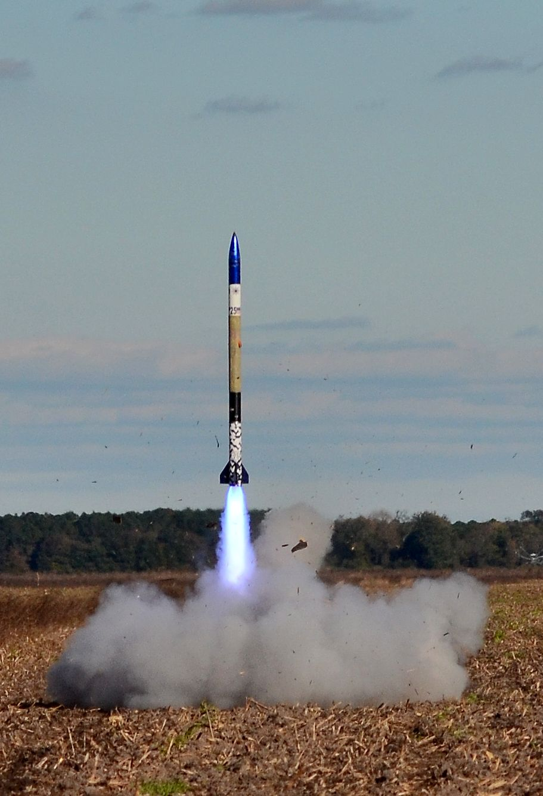
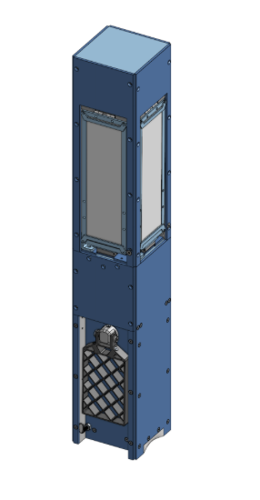
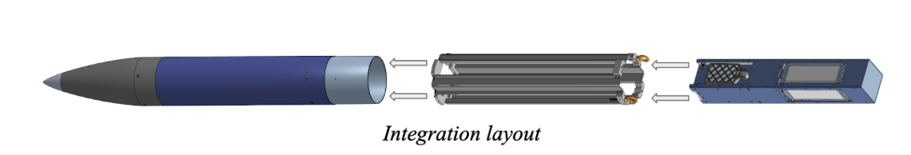
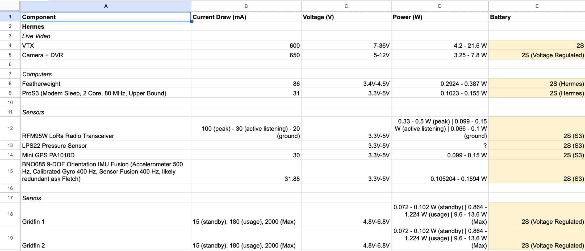
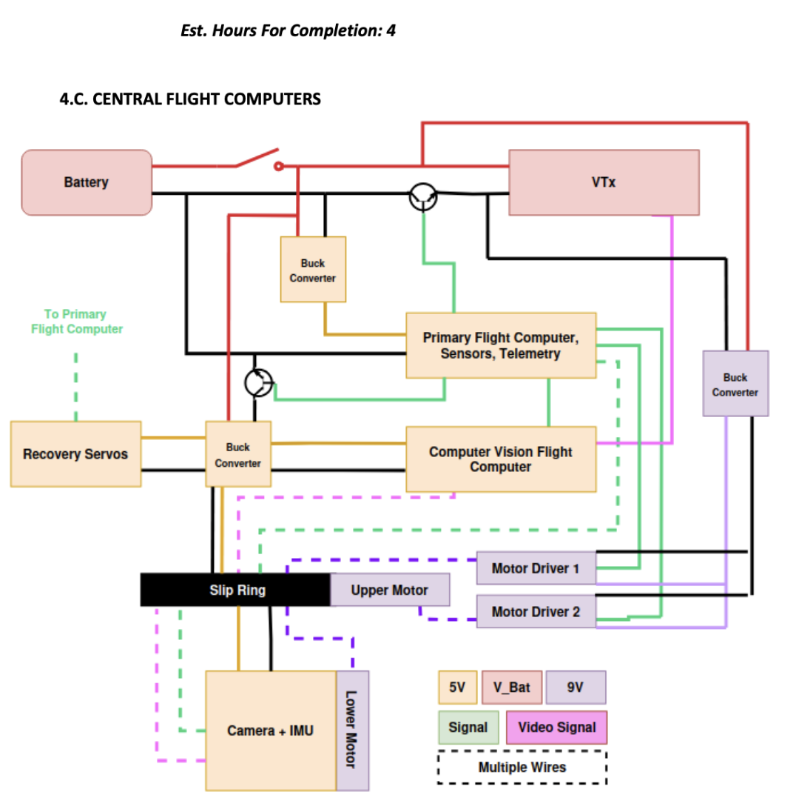
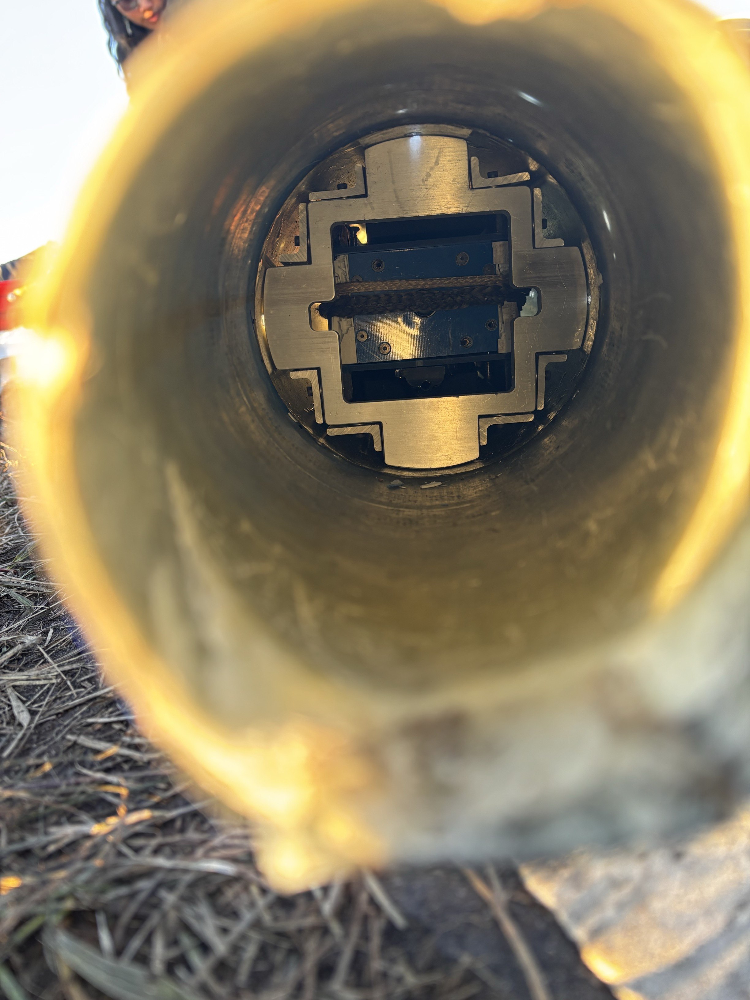
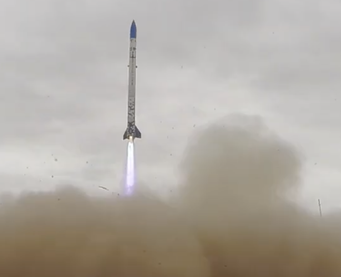

For Duke Aero's 2024-25 build, I am primarily in charge of designing and testing the flight computer that will assist our payload with its tasks. I will also be testing the ability of our payload to perform its tasks before our main launch in 2025 Spaceport America Cup (this is still a work in progress).
Our payload follows a 5U cubesat standard, and the flight computer PCB specifically needs to sit along the wall of a 1U cube space (10x10x10 cm).
Power management is extremely important for this project, since we are restricted in terms of batteries we are allowed to use (for instance, LiPo not allowed), and some of our components are quite power hungry (servos and Raspberry Pi especially).
A mix of I2C and SPI protocols needs to be used to communicate effectively between components and minimize GPIO pin usage.


The 2024-25 payload is designed to follow a 5U cubesat standard, and will be ejected from the rocket when it reaches apogee (30,000 ft goal). This version's payload has the following goals:


A lot of critical design decisions needed to be made when designing this circuit due to the high volume of parts we were dealing with and the power draw of each of those components (shown in the first image). The main components were organized as follows:
The main board (schematics and PCB view) are shown. Board design has been reviewed (internally) and is approved for manufacture.

